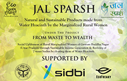

We are blessed to have received acknowledgement for our efforts constantly which has also worked as a motivation to keep going
Green Leadership Award (2021)
This was awarded to Shri Rakesh Khatri ji recognizing his efforts on conservation of the little avian being House Sparrow by motivating more and more people to make nests and to sensitize them towards environmental conservation and sustainable lifestyle.
Sabera Social Leader of the Year (2021)
This was in recognition of the distinguished contribution of Sh. Rakesh Khatri ji towards the transformative journey of the Nation, by creating spaces for House Sparrows to nest to put a stop to the decline in their population. He has build over 4.75 lakh nests since 2008.
National Science Award (2020)
This was in recognition for the untiring work being carried out by us towards science communication by motivating new medium of communications among the younger generation particularly the school and college students with a focus on theatre.
Shining World Compassion Award (2020)
This was in recognition to the courageous, selfless, advocacy for our voiceless animals by building bird nests and nurturing empathy within the community encouraging humane, justice and respect. This is a motivation for building more and more nests.
Limca Book of World Record (2017-18)
This was for reaching out to 60000 students and 5000 teachers in the span of 2 years. During these two years, we organized 1600 workshops facilitating the building of 34000 nests. 65% of these nests were recorded to be occupied. Last 5 years saw us reaching 2,00,000 children.
Limca Book of World Record (2021-23)
This was in recognition for the efforts made by us in organizing Panasonic Prithvi Vandana Program in seven months by engaging with 215 schools acrooss 24 cities and 1,12,000 children. between Sep 2012 to April 2013 for theatre on Climate Change.
International Green Apple Award
(2012)
This was in recognition of the work Rakesh ji has initiated for Sparrow Conservation in the form of Nests that he was making. This was an award for innovative approach to an environmental crisis.

Jal Sparsh (20-20)
Social Upliftment of Rural Marginalised Women of Gautam Buddha Nagar(UP)through Sustainable Income Generation and Revivng of 7 water bodies by clearing them of Water Hyacinth.


.png)
.png)
.png)